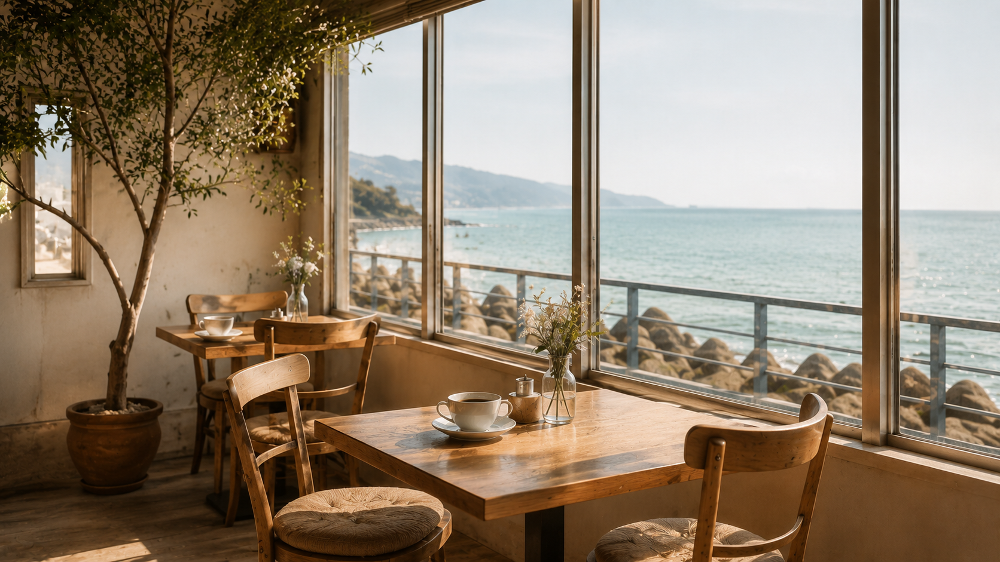
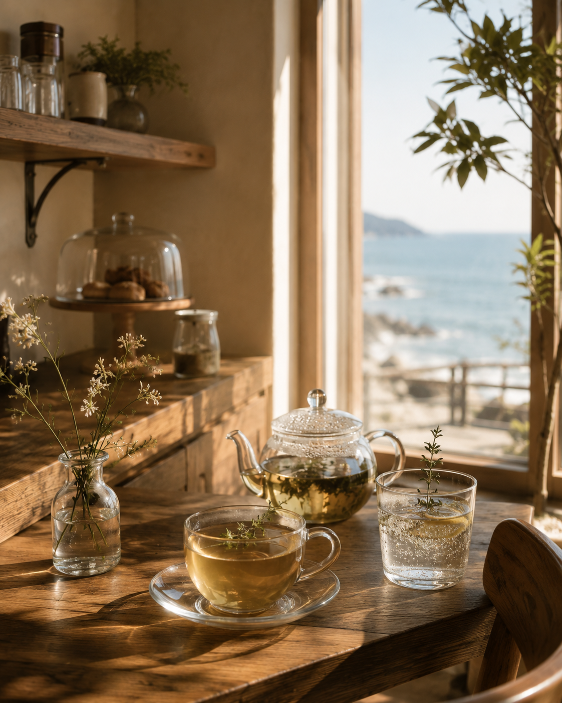

Coffee, Food & Seaside Moments
海を眺めて、
ほどける時間。
やわらかな光と波音に包まれて、
いつもの一日を少しだけ特別に。
News
お知らせ
営業日や季節のメニューなど、最新のお知らせをご案内します。
お知らせを読み込んでいます。
Concept
海辺で過ごす、
静かな余白。

海を眺めながら、時間を忘れて過ごす場所。丁寧に淹れたコーヒーと香り豊かなハーブティー、季節の料理やスイーツ、夕暮れにはワインやビールを。
Café Tは、
一日のどの時間にも寄り添う海辺のカフェです。
Moments
時間に合わせて、
過ごし方を選ぶ。
光の入る席で、
静かな一杯を。
開店後のやわらかな空気に包まれて、ハンドドリップコーヒーとともに一日を始める時間。
海を眺める、ゆっくりめのランチ。
ローストビーフや季節のプレートを、会話の間を楽しみながら味わう昼のひととき。
夕暮れに、少しだけ特別な余韻を。
テラスの空が色づくころ、スパークリングワインやビールで穏やかに締めくくります。
波音のそばで、
いつもの一日を少し特別に。
Gallery
料理と空間、
その細部まで。

Information
店舗情報
- 店名
- 海の見えるCafé T
- 営業時間
- 10:00 - 20:00
- 定休日
- 水曜日
- 所在地
- 神奈川県某所 海沿いの道 1-2-3
- 席数
- 24席
- テラス席
- あり
- 駐車場
- 近隣コインパーキングあり
- 支払い
- 現金 / クレジットカード / 電子マネー
Access
海沿いの道を、
少し歩いた先へ。
Sea Side Road
Café T
最寄りのバス停から海沿いの道をゆっくり歩いて約5分。潮風を感じる小道の先に、Café Tの小さな看板が見えてきます。
お車でお越しの場合は、近隣のコインパーキングをご利用ください。